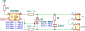
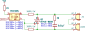

Post Processing¶
Since the main purpose of the repo is to have technical notes with some included schematics it is nice to have schematics stored within the repository, but being processed into svg at the publishing stage.
To make it automatic I use templates of each topic/chapter. Now, for automation our script can run through the docs or docs/content folder of repository, check each subfolder for images to be created and create nice SVG illustrations from it.
As post-processing the Python is chosen since it can be run cross-platform.
In the root folder of the project, create the folder .scripts (or other name) and sub-folder local_repo with file __init__.py in it.
The folder .scripts will contain all scripts that do actual task, the file local_repo/__init__.py will contain all variables that are common for all projects.
import os, sys, subprocess
import logging
content_folder_name = "docs"
images_folder_name = "images"
images_src_folder_name = "src"
images_render_folder_name = "render"
images_software_folder_name = "kicad"
project_root_folder = os.path.dirname(os.path.dirname(os.path.dirname(__file__)))
content_folder = os.path.join(project_root_folder, content_folder_name)
src_folder_postfix = os.path.join(images_folder_name, images_src_folder_name, images_software_folder_name)
target_folder_postfix = os.path.join(images_folder_name, images_render_folder_name, images_software_folder_name)
import os, sys, subprocess
import logging
import re
import platform
from local_repo import project_root_folder, content_folder, src_folder_postfix, target_folder_postfix
match platform.system():
case 'Windows':
kicad_cli = r'C:\Program Files\KiCad\9.0\bin\kicad-cli.exe'
inkscape = r'C:\Program Files\Inkscape\bin\inkscape.exe'
case 'Darwin':
kicad_cli = r'/Applications/KiCad/KiCad.app/Contents/MacOS/kicad-cli'
inkscape = r'/Applications/Inkscape.app/Contents/MacOS/inkscape'
case 'Linux':
kicad_cli=r'kicad-cli'
inkscape=r'inkscape'
extensions = ['kicad_sch']
replacements = [
# description tags
(r'<desc\s[^>]*>[\s\S]*?</desc>', ''),
# definitions tags
(r'<defs[^\n]*\n[^>]*?/>', ''),
# template of title, generated by KiCAD
(r'(<title\s+id="[^"]*">)(?:SVG Image created as )?(.*?)(?:\.svg.*?)</title>', r'\1\2</title>')
]
def kicad_to_svg(target_folder, src_file):
subprocess.call([kicad_cli,'sch','export','svg','--output', target_folder,'--exclude-drawing-sheet', '--no-background-color', src_file])
def postprocess_svg (render_file_name):
# cropping according to content without fields
subprocess.call([inkscape,'--export-plain-svg','--export-text-to-path','--export-area-drawing','--export-background-opacity=255', '--export-overwrite', render_file_name])
# replacing some identifiers to decrease the amount of diffs during git commits
with open(render_file_name, 'r', encoding="utf-8") as file:
svg_content = file.read()
for replacement in replacements:
svg_content = re.sub(replacement[0], replacement[1], svg_content, flags = re.M)
with open(render_file_name, 'w', encoding="utf-8") as file:
# encoding is IMPORTANT if non-English symbols are involved
file.write(svg_content)
if __name__ == "__main__":
logger = logging.getLogger(__name__)
logging.basicConfig(format='%(asctime)s %(message)s', level=logging.INFO)
logger.info(f"Detected project root folder:\n\t{project_root_folder}")
logger.info(f"Looking for KiCAD schematics in folder:\n\t{content_folder}")
logger.info(f"Used source folder postfix:\n\t{src_folder_postfix}")
logger.info(f"Used source target postfix:\n\t{target_folder_postfix}")
for root, dirs, files in os.walk(content_folder):
for file in files:
if any(file.lower().endswith(extension.lower()) for extension in extensions):
src_file = os.path.join(root, file)
render_file_name = os.path.splitext(file)[0]+'.svg'
target_folder = root.replace(src_folder_postfix, target_folder_postfix)
render_file = os.path.join(target_folder, render_file_name)
os.makedirs(target_folder, exist_ok=True)
logger.info(f"Exporting schematics:\n\t{src_file}")
kicad_to_svg(target_folder, src_file)
logger.info(f"Post-processing file :\n\t{render_file}")
postprocess_svg(render_file)
Those are example, for the actual state, refer to the content of .scripts of this repository.
As of now, Inkscape does not allow to add 5mm margin per each side of the drawing, but there might be a way around it.
Compressing SVG¶
For smaller svg files, consider additionally compressing them at the point of creation.
use scour library of python (add it to prerequisite.txt).
For example , create in the .scripts folder subfolder svg_compressor with __init__.py file of the following content:
import os
import logging
from scour import scour
logging.basicConfig(
level=logging.INFO,
format='%(asctime)s - %(name)s - %(levelname)s - %(message)s'
)
logger = logging.getLogger('svg_compressor')
def compress_svg(input_file, output_file=None):
options = scour.generateDefaultOptions()
# High compression settings
options.strip_comments = True
options.strip_xml_prolog = True
options.remove_metadata = True
options.enable_viewboxing = True
options.indent_type = 'none'
#options.digits = 3
options.simplify_colors = True
options.remove_descriptive_elements = True
options.strip_ids = True
options.shorten_ids = True
options.enable_id_stripping = True
options.newlines = False
# Read the input file
with open(input_file, 'r') as f:
svg_raw_data = f.read()
original_size = len(svg_raw_data)
# Compress the SVG
compressed_svg = scour.scourString(svg_raw_data, options)
# Calculate size reduction percentage
reduction_delta = (original_size - len(compressed_svg))
reduction_ratio = reduction_delta / original_size * 100
logger.info(f"Space saving:\n\t {reduction_delta} bytes, {reduction_ratio:.2f}%")
# Determine output path
if output_file is None:
output_file = input_file
logger.info("No output file specified, will overwrite input file")
# Write the compressed SVG
with open(output_file, 'w') as f:
f.write(compressed_svg)
No, we can compress the SVG files exported from KiCAD. by adding following lines to kicad processing script:
# This is already there:
# logger.info(f"Post-processing file :\n\t{render_file}")
# postprocess_svg(render_file)
# Add this
logger.info(f"Compressing file :\n\t{render_file}")
svg_compressor.compress_svg(render_file)
And don't forget to import out compressor:
For Example:
| Original, cropped | Compressed |
|---|---|
 |
 |
Visually, there is no difference, but size-wise. compressed image is 139419 bytes (38.69%) smaller than un-compressed.
Versions remark and installation¶
As of now, the actual versions are:
- KiCad 9.0.0
- Inkscape 1.4.0
To install them both on Ubuntu 24.04 LTS from under WSL
sudo apt update
sudo add-apt-repository --yes ppa:kicad/kicad-9.0-releases
sudo apt install --install-recommends kicad -y
sudo apt full-upgrade -y
sudo apt install inkscape -y
Don't forget to adjust the .gitignore to drop some intermediate python files aswell as kicad back-up folders and archives.